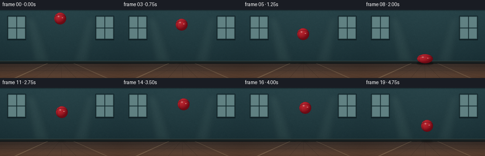
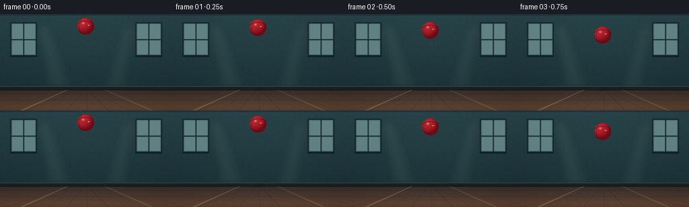

CODING AGENTS AS PIXEL WORLD MODELS
traex/GPT-5.6-Sol · instance_preservation_0023
点击播放 · 原生 RGB 像素
逐轮保存的候选
回放视频、检查图与代码变化。
每份候选均可单独播放。实际图片检查记录在下方工具轨迹中。
候选 01播放与检查图
点击播放 · 原生 RGB 像素


展开代码变化
--- 上一保存版本
+++ 本次保存版本
@@ -0,0 +1,237 @@
+from pathlib import Path
+import json
+import math
+import numpy as np
+from PIL import Image, ImageDraw, ImageFilter
+import artifact_io
+
+# Deterministic, fully procedural text-to-video rendering.
+CASE_DIR = Path(__file__).resolve().parent
+SPEC = json.loads((CASE_DIR / "task_spec.json").read_text())
+W, H = SPEC["width"], SPEC["height"]
+N = SPEC["frames"]
+SS = 4
+SW, SH = W * SS, H * SS
+FLOOR_Y = 113.0
+GROUND_CENTER = 100.0
+
+
+def sc(v):
+ return int(round(v * SS))
+
+
+def make_background():
+ """Quiet indoor practice-court scene, rendered once to keep the camera locked."""
+ yy, xx = np.mgrid[0:SH, 0:SW]
+ horizon = sc(FLOOR_Y)
+ arr = np.zeros((SH, SW, 3), dtype=np.float32)
+
+ # Cool plaster wall: gentle top-to-bottom falloff and central vignette.
+ wall_t = np.clip(yy / max(horizon, 1), 0, 1)
+ top = np.array([36, 62, 68], dtype=np.float32)
+ bottom = np.array([23, 44, 50], dtype=np.float32)
+ wall = top[None, None, :] * (1 - wall_t[..., None]) + bottom[None, None, :] * wall_t[..., None]
+ center_glow = np.exp(-(((xx - SW * .50) / (SW * .52)) ** 2 + ((yy - SH * .42) / (SH * .78)) ** 2))
+ wall += center_glow[..., None] * np.array([5.0, 7.0, 6.0])
+ arr[:] = wall
+
+ # Warm wooden floor with perspective-aware gradient.
+ floor_mask = yy >= horizon
+ ft = np.clip((yy - horizon) / max(SH - horizon - 1, 1), 0, 1)
+ floor_near = np.array([89, 61, 44], dtype=np.float32)
+ floor_far = np.array([47, 38, 34], dtype=np.float32)
+ floor = floor_far[None, None, :] * (1 - ft[..., None]) + floor_near[None, None, :] * ft[..., None]
+ floor += (8 * np.exp(-((xx - SW * .49) / (SW * .48)) ** 2))[..., None]
+ arr[floor_mask] = floor[floor_mask]
+
+ # Fixed subtle material texture (not flickering film noise).
+ rng = np.random.default_rng(2301)
+ noise_small = rng.normal(0, 1.0, (H, W)).astype(np.float32)
+ noise = np.asarray(Image.fromarray(noise_small, mode="F").resize((SW, SH), Image.Resampling.BILINEAR))
+ strength = np.where(yy < horizon, 1.2, 0.8)
+ arr += noise[..., None] * strength[..., None]
+ arr = np.uint8(np.clip(arr, 0, 255))
+ im = Image.fromarray(arr, "RGB")
+ d = ImageDraw.Draw(im, "RGBA")
+
+ # High windows at the sides; center remains uncluttered for the ball.
+ for x0, x1 in [(15, 55), (201, 241)]:
+ d.rounded_rectangle((sc(x0), sc(12), sc(x1), sc(63)), radius=sc(1.5),
+ fill=(117, 153, 153, 112), outline=(16, 33, 38, 230), width=sc(2))
+ # cloudy daylight panes
+ d.rectangle((sc(x0+3), sc(15), sc(x1-3), sc(60)), fill=(133, 169, 168, 105))
+ d.line((sc((x0+x1)/2), sc(14), sc((x0+x1)/2), sc(61)), fill=(20, 42, 47, 220), width=sc(2))
+ d.line((sc(x0+2), sc(38), sc(x1-2), sc(38)), fill=(20, 42, 47, 220), width=sc(2))
+ d.line((sc(x0), sc(63), sc(x1), sc(63)), fill=(12, 27, 31, 190), width=sc(2))
+
+ # Soft window glow on wall, behind structural details.
+ glow = Image.new("RGBA", (SW, SH), (0, 0, 0, 0))
+ gd = ImageDraw.Draw(glow)
+ gd.polygon([(sc(54), sc(15)), (sc(74), sc(15)), (sc(107), sc(113)), (sc(72), sc(113))],
+ fill=(172, 202, 185, 17))
+ gd.polygon([(sc(202), sc(15)), (sc(183), sc(15)), (sc(153), sc(113)), (sc(186), sc(113))],
+ fill=(172, 202, 185, 14))
+ glow = glow.filter(ImageFilter.GaussianBlur(sc(6)))
+ im = Image.alpha_composite(im.convert("RGBA"), glow).convert("RGB")
+ d = ImageDraw.Draw(im, "RGBA")
+
+ # Baseboard and contact line make the ground plane unambiguous.
+ d.rectangle((0, sc(108), SW, sc(113)), fill=(24, 31, 31, 255))
+ d.line((0, sc(108), SW, sc(108)), fill=(78, 94, 88, 190), width=sc(.7))
+ d.line((0, sc(113), SW, sc(113)), fill=(12, 17, 18, 230), width=sc(1))
+
+ # Parquet seams converging toward a vanishing point.
+ vp_x = 128
+ for x_bottom in range(-25, 306, 31):
+ d.line((sc(vp_x + (x_bottom-vp_x)*0.08), sc(113), sc(x_bottom), SH),
+ fill=(26, 22, 21, 90), width=sc(.45))
+ d.line((sc(vp_x + (x_bottom-vp_x)*0.08 + .8), sc(113), sc(x_bottom+.8), SH),
+ fill=(145, 102, 68, 30), width=sc(.35))
+ # Horizontal board joints, tighter toward horizon.
+ for y in [119, 128, 140]:
+ d.line((0, sc(y), SW, sc(y)), fill=(29, 23, 21, 85), width=sc(.45))
+ # A faded court stripe receding into depth.
+ d.polygon([(sc(29), SH), (sc(34), SH), (sc(101), sc(113)), (sc(99), sc(113))], fill=(204, 182, 137, 60))
+ d.polygon([(sc(223), SH), (sc(228), SH), (sc(157), sc(113)), (sc(155), sc(113))], fill=(204, 182, 137, 42))
+
+ # Top/bottom cinematic edge shading.
+ shade = Image.new("RGBA", (SW, SH), (0, 0, 0, 0))
+ sd = ImageDraw.Draw(shade)
+ sd.rectangle((0, 0, SW, sc(2)), fill=(5, 12, 14, 70))
+ sd.rectangle((0, sc(142), SW, SH), fill=(9, 7, 7, 35))
+ return Image.alpha_composite(im.convert("RGBA"), shade)
+
+
+# Carefully staged trajectory: 2 s descent, impact, high rebound, then descent.
+ys = [18, 20, 24, 31, 40, 51, 65, 82, 103.2,
+ 81, 64, 51, 42, 36.5, 34.5, 36.5, 42, 51, 64, 80]
+# Slight natural lateral drift, small enough to read as a straight drop.
+xs = [127.0, 127.1, 127.2, 127.4, 127.7, 128.0, 128.4, 128.8, 129.2,
+ 129.6, 130.0, 130.4, 130.8, 131.2, 131.6, 132.0, 132.4, 132.8, 133.2, 133.6]
+
+
+def ball_axes(i):
+ # Rubber deformation around floor impact; area stays approximately constant.
+ if i == 7:
+ return 12.2, 13.4 # stretched just before impact
+ if i == 8:
+ return 16.8, 9.8 # unmistakable squash at contact
+ if i == 9:
+ return 11.9, 13.5 # brief launch stretch
+ return 12.6, 12.6
+
+
+def add_shadow(scene, x, y, rx, ry):
+ altitude = max(0.0, GROUND_CENTER - min(y, GROUND_CENTER))
+ proximity = math.exp(-altitude / 29.0)
+ # Tight and dark at impact, broad/faint when airborne.
+ sw = 7.0 + 10.5 * proximity
+ sh = 1.2 + 2.0 * proximity
+ alpha = int(25 + 112 * proximity)
+ layer = Image.new("RGBA", (SW, SH), (0, 0, 0, 0))
+ ld = ImageDraw.Draw(layer)
+ ld.ellipse((sc(x-sw), sc(FLOOR_Y-sh), sc(x+sw), sc(FLOOR_Y+sh)), fill=(5, 7, 8, alpha))
+ layer = layer.filter(ImageFilter.GaussianBlur(sc(1.8 if altitude > 5 else 1.0)))
+ return Image.alpha_composite(scene, layer)
+
+
+def add_reflection(scene, x, y, rx, ry):
+ # A short, dim red floor reflection only when the ball nears the polished floor.
+ altitude = max(0.0, GROUND_CENTER-y)
+ if altitude > 37:
+ return scene
+ a = int(34 * (1-altitude/37.0))
+ layer = Image.new("RGBA", (SW, SH), (0, 0, 0, 0))
+ ld = ImageDraw.Draw(layer)
+ top = FLOOR_Y + 2
+ ld.ellipse((sc(x-rx*.65), sc(top), sc(x+rx*.65), sc(top+ry*.38)), fill=(137, 25, 31, a))
+ layer = layer.filter(ImageFilter.GaussianBlur(sc(2.2)))
+ return Image.alpha_composite(scene, layer)
+
+
+def draw_ball(scene, i, x, y, rx, ry):
+ """Shaded crimson rubber ball with persistent seams and a tiny maker mark."""
+ # Ball local mask.
+ mask = Image.new("L", (SW, SH), 0)
+ md = ImageDraw.Draw(mask)
+ box = (sc(x-rx), sc(y-ry), sc(x+rx), sc(y+ry))
+ md.ellipse(box, fill=255)
+
+ yy, xx = np.mgrid[0:SH, 0:SW]
+ nx = (xx / SS - x) / rx
+ ny = (yy / SS - y) / ry
+ inside = nx*nx + ny*ny <= 1.0
+ nz = np.sqrt(np.clip(1.0 - nx*nx - ny*ny, 0, 1))
+ # Light comes from upper left windows. Deep red, never orange.
+ lambert = np.clip(-0.43*nx - 0.62*ny + 0.65*nz, 0, 1)
+ rim = np.clip(1.0-nz, 0, 1)
+ base = np.zeros((SH, SW, 4), dtype=np.uint8)
+ r = 119 + 79*lambert - 24*rim
+ g = 13 + 26*lambert - 4*rim
+ b = 23 + 27*lambert - 5*rim
+ base[..., 0] = np.uint8(np.clip(r, 0, 255))
+ base[..., 1] = np.uint8(np.clip(g, 0, 255))
+ base[..., 2] = np.uint8(np.clip(b, 0, 255))
+ base[..., 3] = np.where(inside, 255, 0).astype(np.uint8)
+ ball = Image.fromarray(base, "RGBA")
+
+ # Persistent seam pattern. It deforms together with the same ball at impact.
+ detail = Image.new("RGBA", (SW, SH), (0, 0, 0, 0))
+ dd = ImageDraw.Draw(detail)
+ seam = (67, 8, 16, 180)
+ hi_seam = (239, 102, 104, 35)
+ # Curved vertical seam (fixed in ball coordinates; slight drift implies gentle spin).
+ spin = (i * 2.0) % 360
+ shift = math.sin(math.radians(spin))*0.9
+ dd.arc((sc(x-rx*.76+shift), sc(y-ry*1.05), sc(x+rx*.50+shift), sc(y+ry*1.05)),
+ start=77, end=283, fill=seam, width=sc(.85))
+ dd.arc((sc(x-rx*.72+shift), sc(y-ry*1.03), sc(x+rx*.54+shift), sc(y+ry*1.03)),
+ start=80, end=278, fill=hi_seam, width=sc(.35))
+ # Broad diagonal molded groove.
+ dd.arc((sc(x-rx*1.11), sc(y-ry*.63), sc(x+rx*1.12), sc(y+ry*.73)),
+ start=194, end=351, fill=seam, width=sc(.75))
+ # Tiny pale twin-dot maker mark, always present on same side.
+ dd.ellipse((sc(x+rx*.27), sc(y-ry*.18), sc(x+rx*.39), sc(y-ry*.06)), fill=(245, 194, 177, 210))
+ dd.ellipse((sc(x+rx*.43), sc(y-ry*.15), sc(x+rx*.50), sc(y-ry*.08)), fill=(245, 194, 177, 150))
+ detail.putalpha(Image.composite(detail.getchannel("A"), Image.new("L", (SW, SH), 0), mask))
+ ball = Image.alpha_composite(ball, detail)
+
+ # Tight glossy highlights that also follow the squash ellipse.
+ gloss = Image.new("RGBA", (SW, SH), (0, 0, 0, 0))
+ gd = ImageDraw.Draw(gloss)
+ gd.ellipse((sc(x-rx*.47), sc(y-ry*.54), sc(x-rx*.08), sc(y-ry*.17)), fill=(255, 226, 215, 88))
+ gd.ellipse((sc(x-rx*.37), sc(y-ry*.43), sc(x-rx*.18), sc(y-ry*.24)), fill=(255, 244, 231, 112))
+ gloss = gloss.filter(ImageFilter.GaussianBlur(sc(.75)))
+ gloss.putalpha(Image.composite(gloss.getchannel("A"), Image.new("L", (SW, SH), 0), mask))
+ ball = Image.alpha_composite(ball, gloss)
+
+ # Contact occlusion at the exact squash frame helps sell weight.
+ if i == 8:
+ bd = ImageDraw.Draw(ball, "RGBA")
+ bd.arc(box, start=18, end=162, fill=(75, 8, 13, 150), width=sc(.55))
+ return Image.alpha_composite(scene, ball)
+
+
+def render_frame(i, background):
+ x, y = xs[i], ys[i]
+ rx, ry = ball_axes(i)
+ scene = background.copy()
+ scene = add_shadow(scene, x, y, rx, ry)
+ scene = add_reflection(scene, x, y, rx, ry)
+ scene = draw_ball(scene, i, x, y, rx, ry)
+
+ # Downsample with Lanczos for clean, filmic antialiasing.
+ out = scene.convert("RGB").resize((W, H), Image.Resampling.LANCZOS)
+ return np.asarray(out, dtype=np.uint8)
+
+
+def main():
+ background = make_background()
+ frames = np.stack([render_frame(i, background) for i in range(N)], axis=0)
+ assert frames.shape == (N, H, W, 3) and frames.dtype == np.uint8
+ artifact_io.save(frames, CASE_DIR)
+ print(f"saved {N} RGB frames at {W}x{H}")
+
+
+if __name__ == "__main__":
+ main()
可观测工具轨迹
实际执行的命令与返回图片。
命令 1exit 0
/bin/bash -lc "cat prompt.txt && printf '\\n---GENERATION_RULES---\\n' && cat GENERATION_RULES.md"
命令 2exit 0
/bin/bash -lc "cat task_spec.json && printf '\\n---FILES---\\n' && find . -maxdepth 2 -type f -printf '%p %s bytes\\n' | sort"
命令 3exit 0
/bin/bash -lc "sed -n '1,240p' artifact_io.py"
命令 4exit 0
/bin/bash -lc "cat > generate.py <<'PY'
from pathlib import Path
import json
import math
import numpy as np
from PIL import Image, ImageDraw, ImageFilter
import artifact_io
# Deterministic, fully procedural text-to-video rendering.
CASE_DIR = Path(__file__).resolve().parent
SPEC = json.loads((CASE_DIR / \"task_spec.json\").read_text())
W, H = SPEC[\"width\"], SPEC[\"height\"]
N = SPEC[\"frames\"]
SS = 4
SW, SH = W * SS, H * SS
FLOOR_Y = 113.0
GROUND_CENTER = 100.0
def sc(v):
return int(round(v * SS))
def make_background():
\"\"\"Quiet indoor practice-court scene, rendered once to keep the camera locked.\"\"\"
yy, xx = np.mgrid[0:SH, 0:SW]
horizon = sc(FLOOR_Y)
arr = np.zeros((SH, SW, 3), dtype=np.float32)
# Cool plaster wall: gentle top-to-bottom falloff and central vignette.
wall_t = np.clip(yy / max(horizon, 1), 0, 1)
top = np.array([36, 62, 68], dtype=np.float32)
bottom = np.array([23, 44, 50], dtype=np.float32)
wall = top[None, None, :] * (1 - wall_t[..., None]) + bottom[None, None, :] * wall_t[..., None]
center_glow = np.exp(-(((xx - SW * .50) / (SW * .52)) ** 2 + ((yy - SH * .42) / (SH * .78)) ** 2))
wall += center_glow[..., None] * np.array([5.0, 7.0, 6.0])
arr[:] = wall
# Warm wooden floor with perspective-aware gradient.
floor_mask = yy >= horizon
ft = np.clip((yy - horizon) / max(SH - horizon - 1, 1), 0, 1)
floor_near = np.array([89, 61, 44], dtype=np.float32)
floor_far = np.array([47, 38, 34], dtype=np.float32)
floor = floor_far[None, None, :] * (1 - ft[..., None]) + floor_near[None, None, :] * ft[..., None]
floor += (8 * np.exp(-((xx - SW * .49) / (SW * .48)) ** 2))[..., None]
arr[floor_mask] = floor[floor_mask]
# Fixed subtle material texture (not flickering film noise).
rng = np.random.default_rng(2301)
noise_small = rng.normal(0, 1.0, (H, W)).astype(np.float32)
noise = np.asarray(Image.fromarray(noise_small, mode=\"F\").resize((SW, SH), Image.Resampling.BILINEAR))
strength = np.where(yy < horizon, 1.2, 0.8)
arr += noise[..., None] * strength[..., None]
arr = np.uint8(np.clip(arr, 0, 255))
im = Image.fromarray(arr, \"RGB\")
d = ImageDraw.Draw(im, \"RGBA\")
# High windows at the sides; center remains uncluttered for the ball.
for x0, x1 in [(15, 55), (201, 241)]:
d.rounded_rectangle((sc(x0), sc(12), sc(x1), sc(63)), radius=sc(1.5),
fill=(117, 153, 153, 112), outline=(16, 33, 38, 230), width=sc(2))
# cloudy daylight panes
d.rectangle((sc(x0+3), sc(15), sc(x1-3), sc(60)), fill=(133, 169, 168, 105))
d.line((sc((x0+x1)/2), sc(14), sc((x0+x1)/2), sc(61)), fill=(20, 42, 47, 220), width=sc(2))
d.line((sc(x0+2), sc(38), sc(x1-2), sc(38)), fill=(20, 42, 47, 220), width=sc(2))
d.line((sc(x0), sc(63), sc(x1), sc(63)), fill=(12, 27, 31, 190), width=sc(2))
# Soft window glow on wall, behind structural details.
glow = Image.new(\"RGBA\", (SW, SH), (0, 0, 0, 0))
gd = ImageDraw.Draw(glow)
gd.polygon([(sc(54), sc(15)), (sc(74), sc(15)), (sc(107), sc(113)), (sc(72), sc(113))],
fill=(172, 202, 185, 17))
gd.polygon([(sc(202), sc(15)), (sc(183), sc(15)), (sc(153), sc(113)), (sc(186), sc(113))],
fill=(172, 202, 185, 14))
glow = glow.filter(ImageFilter.GaussianBlur(sc(6)))
im = Image.alpha_composite(im.convert(\"RGBA\"), glow).convert(\"RGB\")
d = ImageDraw.Draw(im, \"RGBA\")
# Baseboard and contact line make the ground plane unambiguous.
d.rectangle((0, sc(108), SW, sc(113)), fill=(24, 31, 31, 255))
d.line((0, sc(108), SW, sc(108)), fill=(78, 94, 88, 190), width=sc(.7))
d.line((0, sc(113), SW, sc(113)), fill=(12, 17, 18, 230), width=sc(1))
# Parquet seams converging toward a vanishing point.
vp_x = 128
for x_bottom in range(-25, 306, 31):
d.line((sc(vp_x + (x_bottom-vp_x)*0.08), sc(113), sc(x_bottom), SH),
fill=(26, 22, 21, 90), width=sc(.45))
d.line((sc(vp_x + (x_bottom-vp_x)*0.08 + .8), sc(113), sc(x_bottom+.8), SH),
fill=(145, 102, 68, 30), width=sc(.35))
# Horizontal board joints, tighter toward horizon.
for y in [119, 128, 140]:
d.line((0, sc(y), SW, sc(y)), fill=(29, 23, 21, 85), width=sc(.45))
# A faded court stripe receding into depth.
d.polygon([(sc(29), SH), (sc(34), SH), (sc(101), sc(113)), (sc(99), sc(113))], fill=(204, 182, 137, 60))
d.polygon([(sc(223), SH), (sc(228), SH), (sc(157), sc(113)), (sc(155), sc(113))], fill=(204, 182, 137, 42))
# Top/bottom cinematic edge shading.
shade = Image.new(\"RGBA\", (SW, SH), (0, 0, 0, 0))
sd = ImageDraw.Draw(shade)
sd.rectangle((0, 0, SW, sc(2)), fill=(5, 12, 14, 70))
sd.rectangle((0, sc(142), SW, SH), fill=(9, 7, 7, 35))
return Image.alpha_composite(im.convert(\"RGBA\"), shade)
# Carefully staged trajectory: 2 s descent, impact, high rebound, then descent.
ys = [18, 20, 24, 31, 40, 51, 65, 82, 103.2,
81, 64, 51, 42, 36.5, 34.5, 36.5, 42, 51, 64, 80]
# Slight natural lateral drift, small enough to read as a straight drop.
xs = [127.0, 127.1, 127.2, 127.4, 127.7, 128.0, 128.4, 128.8, 129.2,
129.6, 130.0, 130.4, 130.8, 131.2, 131.6, 132.0, 132.4, 132.8, 133.2, 133.6]
def ball_axes(i):
# Rubber deformation around floor impact; area stays approximately constant.
if i == 7:
return 12.2, 13.4 # stretched just before impact
if i == 8:
return 16.8, 9.8 # unmistakable squash at contact
if i == 9:
return 11.9, 13.5 # brief launch stretch
return 12.6, 12.6
def add_shadow(scene, x, y, rx, ry):
altitude = max(0.0, GROUND_CENTER - min(y, GROUND_CENTER))
proximity = math.exp(-altitude / 29.0)
# Tight and dark at impact, broad/faint when airborne.
sw = 7.0 + 10.5 * proximity
sh = 1.2 + 2.0 * proximity
alpha = int(25 + 112 * proximity)
layer = Image.new(\"RGBA\", (SW, SH), (0, 0, 0, 0))
ld = ImageDraw.Draw(layer)
ld.ellipse((sc(x-sw), sc(FLOOR_Y-sh), sc(x+sw), sc(FLOOR_Y+sh)), fill=(5, 7, 8, alpha))
layer = layer.filter(ImageFilter.GaussianBlur(sc(1.8 if altitude > 5 else 1.0)))
return Image.alpha_composite(scene, layer)
def add_reflection(scene, x, y, rx, ry):
# A short, dim red floor reflection only when the ball nears the polished floor.
altitude = max(0.0, GROUND_CENTER-y)
if altitude > 37:
return scene
a = int(34 * (1-altitude/37.0))
layer = Image.new(\"RGBA\", (SW, SH), (0, 0, 0, 0))
ld = ImageDraw.Draw(layer)
top = FLOOR_Y + 2
ld.ellipse((sc(x-rx*.65), sc(top), sc(x+rx*.65), sc(top+ry*.38)), fill=(137, 25, 31, a))
layer = layer.filter(ImageFilter.GaussianBlur(sc(2.2)))
return Image.alpha_composite(scene, layer)
def draw_ball(scene, i, x, y, rx, ry):
\"\"\"Shaded crimson rubber ball with persistent seams and a tiny maker mark.\"\"\"
# Ball local mask.
mask = Image.new(\"L\", (SW, SH), 0)
md = ImageDraw.Draw(mask)
box = (sc(x-rx), sc(y-ry), sc(x+rx), sc(y+ry))
md.ellipse(box, fill=255)
yy, xx = np.mgrid[0:SH, 0:SW]
nx = (xx / SS - x) / rx
ny = (yy / SS - y) / ry
inside = nx*nx + ny*ny <= 1.0
nz = np.sqrt(np.clip(1.0 - nx*nx - ny*ny, 0, 1))
# Light comes from upper left windows. Deep red, never orange.
lambert = np.clip(-0.43*nx - 0.62*ny + 0.65*nz, 0, 1)
rim = np.clip(1.0-nz, 0, 1)
base = np.zeros((SH, SW, 4), dtype=np.uint8)
r = 119 + 79*lambert - 24*rim
g = 13 + 26*lambert - 4*rim
b = 23 + 27*lambert - 5*rim
base[..., 0] = np.uint8(np.clip(r, 0, 255))
base[..., 1] = np.uint8(np.clip(g, 0, 255))
base[..., 2] = np.uint8(np.clip(b, 0, 255))
base[..., 3] = np.where(inside, 255, 0).astype(np.uint8)
ball = Image.fromarray(base, \"RGBA\")
# Persistent seam pattern. It deforms together with the same ball at impact.
detail = Image.new(\"RGBA\", (SW, SH), (0, 0, 0, 0))
dd = ImageDraw.Draw(detail)
seam = (67, 8, 16, 180)
hi_seam = (239, 102, 104, 35)
# Curved vertical seam (fixed in ball coordinates; slight drift implies gentle spin).
spin = (i * 2.0) % 360
shift = math.sin(math.radians(spin))*0.9
dd.arc((sc(x-rx*.76+shift), sc(y-ry*1.05), sc(x+rx*.50+shift), sc(y+ry*1.05)),
start=77, end=283, fill=seam, width=sc(.85))
dd.arc((sc(x-rx*.72+shift), sc(y-ry*1.03), sc(x+rx*.54+shift), sc(y+ry*1.03)),
start=80, end=278, fill=hi_seam, width=sc(.35))
# Broad diagonal molded groove.
dd.arc((sc(x-rx*1.11), sc(y-ry*.63), sc(x+rx*1.12), sc(y+ry*.73)),
start=194, end=351, fill=seam, width=sc(.75))
# Tiny pale twin-dot maker mark, always present on same side.
dd.ellipse((sc(x+rx*.27), sc(y-ry*.18), sc(x+rx*.39), sc(y-ry*.06)), fill=(245, 194, 177, 210))
dd.ellipse((sc(x+rx*.43), sc(y-ry*.15), sc(x+rx*.50), sc(y-ry*.08)), fill=(245, 194, 177, 150))
detail.putalpha(Image.composite(detail.getchannel(\"A\"), Image.new(\"L\", (SW, SH), 0), mask))
ball = Image.alpha_composite(ball, detail)
# Tight glossy highlights that also follow the squash ellipse.
gloss = Image.new(\"RGBA\", (SW, SH), (0, 0, 0, 0))
gd = ImageDraw.Draw(gloss)
gd.ellipse((sc(x-rx*.47), sc(y-ry*.54), sc(x-rx*.08), sc(y-ry*.17)), fill=(255, 226, 215, 88))
gd.ellipse((sc(x-rx*.37), sc(y-ry*.43), sc(x-rx*.18), sc(y-ry*.24)), fill=(255, 244, 231, 112))
gloss = gloss.filter(ImageFilter.GaussianBlur(sc(.75)))
gloss.putalpha(Image.composite(gloss.getchannel(\"A\"), Image.new(\"L\", (SW, SH), 0), mask))
ball = Image.alpha_composite(ball, gloss)
# Contact occlusion at the exact squash frame helps sell weight.
if i == 8:
bd = ImageDraw.Draw(ball, \"RGBA\")
bd.arc(box, start=18, end=162, fill=(75, 8, 13, 150), width=sc(.55))
return Image.alpha_composite(scene, ball)
def render_frame(i, background):
x, y = xs[i], ys[i]
rx, ry = ball_axes(i)
scene = background.copy()
scene = add_shadow(scene, x, y, rx, ry)
scene = add_reflection(scene, x, y, rx, ry)
scene = draw_ball(scene, i, x, y, rx, ry)
# Downsample with Lanczos for clean, filmic antialiasing.
out = scene.convert(\"RGB\").resize((W, H), Image.Resampling.LANCZOS)
return np.asarray(out, dtype=np.uint8)
def main():
background = make_background()
frames = np.stack([render_frame(i, background) for i in range(N)], axis=0)
assert frames.shape == (N, H, W, 3) and frames.dtype == np.uint8
artifact_io.save(frames, CASE_DIR)
print(f\"saved {N} RGB frames at {W}x{H}\")
if __name__ == \"__main__\":
main()
PY
python generate.py
ls -lh pixels.npz index.html inspection.png frames/00.png frames/08.png frames/14.png"命令 5exit 0
/bin/bash -lc "python - <<'PY'
import numpy as np, json
from PIL import Image
p=np.load('pixels.npz')['pixels']
s=json.load(open('task_spec.json'))
assert p.shape==(s['height'],s['width'],s['frames']) and p.dtype==np.uint32
frames=np.stack([np.asarray(Image.open(f'frames/{i:02d}.png').convert('RGB')) for i in range(20)])
unpacked=np.stack([(p>>16)&255,(p>>8)&255,p&255],axis=-1).transpose(2,0,1,3).astype('uint8')
assert np.array_equal(frames,unpacked)
for i,f in enumerate(frames):
m=(f[...,0]>90)&(f[...,0]>f[...,1]*2.4)&(f[...,0]>f[...,2]*2.0)
yy,xx=np.where(m)
print(f'{i:02d}: red centroid=({xx.mean():.1f},{yy.mean():.1f}) area={len(xx)} bbox=({xx.min()},{yy.min()})-({xx.max()},{yy.max()})')
print('validation passed; distinct consecutive:', [int(np.any(frames[i]"'!=frames[i-1])) for i in range(1,20)])
PY'保存候选 1 份；完成命令 5 次；可验证图片返回 0 张。原始 API 响应与完整日志保留在本地。